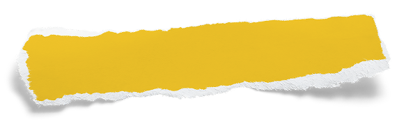

<section class="about-me">
  <div class="about-container">
    <div class="about-left">
      <div class="about-item">
        
        <div class="about-content">
          
          <p>Based in Frankfurt am Main</p>
        </div>
      </div>
      <div class="about-item">
        
        <div class="about-content">
          
          <p>Open to relocate</p>
        </div>
      </div>
      <div class="about-item">
        
        <div class="about-content">
          
          <p>Open to work remote</p>
        </div>
      </div>
    </div>
    <div class="about-right">
      <h3>WHO'S ANTHONY?</h3>
      <h1>About me</h1>
      <div class="underline-wrapper">
        
      </div>
      
      <p>
        Hey there, I'm Anthony! Technology and innovation have always been my
        passion. My journey in IT is driven by a deep curiosity to solve complex
        problems through code. I love the challenge of finding efficient,
        elegant solutions and continuously refining my skills to stay ahead in
        the ever-evolving tech world. What inspires me the most is the ability
        to turn ideas into reality—building applications that make a difference.
        Every project is an opportunity to learn, grow, and push boundaries.
      </p>
      <p>Let's collaborate and build something remarkable together!</p>
      <a href="#contact" class="about-btn">Let's talk</a>
    </div>
  </div>
</section>
